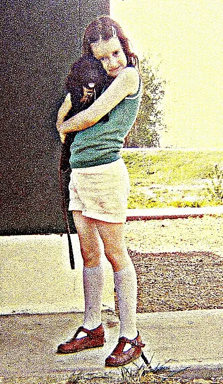
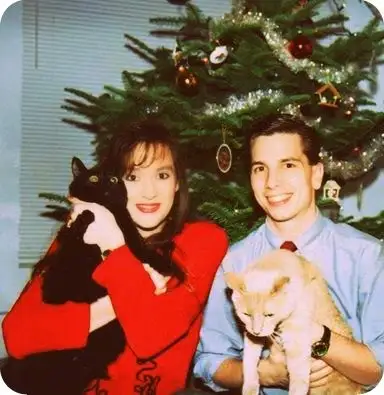
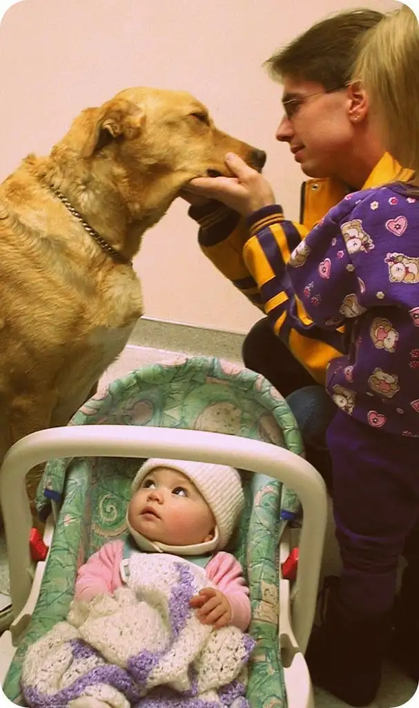
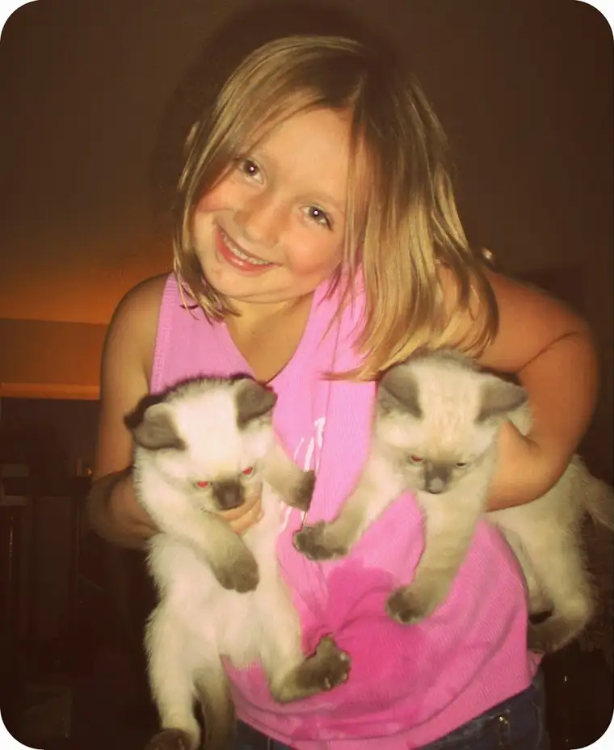

This one kept coming onto my horizon towards the end of 2014, but it never get the attention I wanted to give it, so I thought I’d throw a bone to it now.
The topic is whether pets go to heaven. Traditionally, the Catholic Church has said, in nutshell, not likely. There’s a reason for that, beyond that the Church is plain old mean and wants people to feel sad. No, that’s not it at all.
From what I understand as a lay person (I’m no theologian), the reason the Church teaches thus is that animals and humans are not on the same level, and she wants to make sure we keep our being and relationship to God in proper perspective. While we humans enjoy and even are sustained in some cases by animals, they are not made in the image and likeness of God as we humans are. Because of this likeness to the creator, and the order in which he created us and the emphasis God put on our creation as man and woman, humans do have a special place in God’s heart that transcends his relationship with animals, even though animals are very special, too.
Trust me. I’ve been grappling with this for a long time. I’ve been a pet lover since my youngest years, and when my first “real” dog was killed by a car when I was about eight (I say real meaning he wasn’t another of the strays that had wandered into our yard on the reservation, where there was no leash law, but one I chose out of a litter), I wanted to believe more than anything that I would see my dog in heaven. His early death shattered me, and in my grief-stricken state, it brought solace to me to think I would see “Tickles” again someday.
 |
| Tickles 1, my first dog |
{kind=link}
But about a year later, my mother took me to a theater documentary movie called “Beyond and Back,” which detailed an investigation studying the reality of the soul (52.00 into documentary). Part of this research included observing the human body before and right after death, and weighing the body. Researchers discovered a very slight reduction in weight after death, which they posed could be evidence that the soul did have some mass and had exited the body, leading to a slightly lighter weight. When they conducted the same experiment on dogs, there was no such difference.
I remember looking up at my mom in the theater, and her at me. She knew what I was thinking. “My dog isn’t going to heaven, is he?”
The topic came up at difference points in my life, usually at the death of a pet. And though I’ve come to understand a little better the Church’s teaching over time, I still needed to work out a likelihood in my mind that made sense.
 |
| Geddy and Alex, our first “kids” |
{kind=link}
{kind=link}
While I do believe that humans have eternal souls and that human beings are not on the same plane as animals, I also understand heaven to be a beautiful and wonderful place, containing some of the beings we loved most while on the earth. It makes sense to me that God, who can make anything happen, could conceivably arrange to have my pets end up in heaven someday, too.
 |
| Saying goodbye to Frasier, December 2000 |
{kind=link}
I’m not completely settled on this topic, which has come up against recently. Pope Francis apparently gave a homily that made many pet lovers cheer at what they perceived to be his papal pronouncement confirming that animals indeed will be in heaven after all. Once again, it seemed, the pope was turning the Church on her head and bringing spiritual enlightenment into the dark world. Pet lovers everywhere celebrated.
Despite my longtime desire to see my deceased pets again someday, however, I was not as quick to jump on the band wagon. I have seen the media jump onto these things too quickly too often, and in doing so, relaying statements that are a bit slight of what was actually said. I’m not a fan of taking words out of the pope’s mouth and making them something he never intended, even though I still like thinking of my pets being in heaven.
From what I’ve read, the “animals go to heaven according to Pope Francis” was a case of his words likely being taken out of context. That’s not to say definitively that there won’t be animals in heaven. But it’s not clear. And though it matters, I guess what I’m wondering now is: how much?
As a grieving child, I needed that assurance.
 |
| Olivia with Sugar (deceased) and Spice |
{kind=link}
And as an adult, I still have a sense of all the good things I’ve known being in heaven. But…I am also at a certain place in my spiritual life that I am okay letting go of any definite ideas of what heaven will be like.
It will be nice if my deceased pets show up there, but what matters much more to me now is that the people I love are there. I do believe that animals have souls of sort, but I’m not sure whether they’re eternal souls, destined for the afterlife as ours are; something we can conclude by reason, and also, through the proofs of our faith.
I don’t want to take anything away from my friends who are hanging on with all their might to the idea that their pets will be, without a doubt, within the confines of the pearly gates. But I am gently challenging the insistence that that be so. Should we be attached to this idea? Or are we putting an unfair leash upon ourselves?
Is it possible we might be limiting heaven by making heaven only an extension of what we have known on this earth? Could we just trust that God will make heaven plenty palatable, pets or not?
It’s a tough one, isn’t it? Because we can only imagine what we have known. We cannot imagine something we have not known. Such as the possibility that heaven, as I’ve heard it proposed, will contain colors we have not yet seen. It’s fairly impossible to conceive of something that is not in existence in our world now. We can’t even begin to imagine…
I find peace in letting go of very definite ideas of heaven. I just don’t feel comfortable trying to box heaven into the limited world I have known and can conceive of now because I have known it. I think heaven will be much more than we can conceive and then some.
I do have a strong sense that heaven will be filled with human souls. There are some hints of this in Scripture, though much of it is vague and undefined. And that’s okay. There needs to be some mystery about the next life, and I suspect if we did know more, we couldn’t handle knowing it. So, better to just live the best lives we can now and keep our sights set on something very beautiful, but as of now, incomplete in our minds, it seems to me.
I don’t want to get attached to any specific ideas about heaven and I don’t think we’re meant to, but that doesn’t mean I don’t yearn for it. If my deceased pets do show up, I’ll be delighted, I’m sure. But I’ll be even more ecstatic to see my family members and friends all there. God willing, they all will be.
And maybe, perhaps, Marlene, Tammy, Salty, Sheba, Tickles, Midnight, Tickles 2, Corky, Alex, Geddy, Frasier and Sugar, too.
Q4U: What do you think? Pets in heaven, or no? Does it matter?